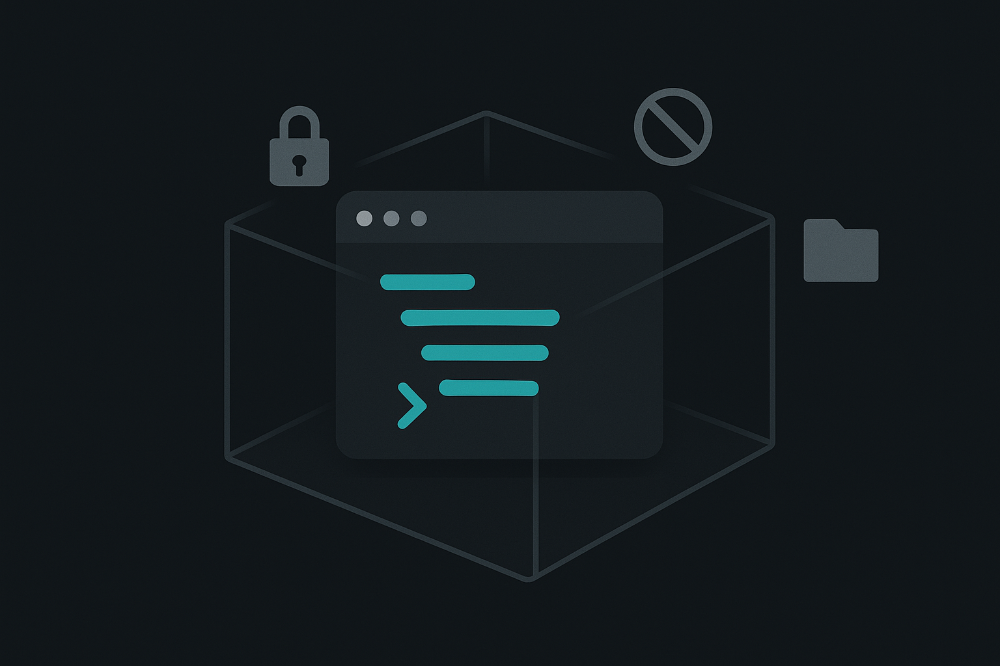

Course 06 / Layer 1 -- ツール基礎
OpenAI Codex基礎 CLIエージェント入門OpenAI Codex CLIは、ターミナルから自然言語で指示してコードを書かせる自律型エージェントです。サンドボックス実行環境による安全性が特徴。suggest/auto-edit/full-autoの3段階モード、AGENTS.md設計、Claude Code/Copilotとの使い分けまでを扱います。
初級-中級 約8時間(480分) 9 Sections + 2 Review ハンズオン比率 59% 理解度クイズ付き
Section 01 -- 45min(講義30 + ハンズオン15)
OpenAI Codexとは
Codex CLIはOpenAIが2025年にオープンソース公開したターミナルベースのコーディングエージェントです。自然言語で指示を出すと、GPT-4oやo3-miniが背後でコードを生成し、サンドボックス内で実行まで行います。IDEを開かず、ターミナルだけで開発作業を完結させる設計思想が根底にあります。
ChatGPTがブラウザ上の対話ツールであるのに対し、Codex CLIはローカルのファイルシステムに直接アクセスする点が決定的に異なります。コードの読み書き、テスト実行、git操作、ドキュメント生成まで、開発者がターミナルで行うあらゆる操作をAIが代行できるわけです。
%%{init:{'theme':'dark','themeVariables':{'primaryColor':'#00A5BF','primaryBorderColor':'#007A8F','primaryTextColor':'#e8e8e8','lineColor':'#00A5BF','secondaryColor':'#1a1a1a','background':'#141414','mainBkg':'#1a1a1a','nodeBorder':'#00A5BF'}}}%%
graph LR
A["ユーザー指示 Codex CLIのアーキテクチャ。指示はAPIを経由し、実行はサンドボックス内で安全に行われる
インストールとバージョン確認
# Codex CLIのインストール
$ npm install -g @openai/codex
# バージョン確認
$ codex --version
0.1.2504301
# ヘルプの表示
$ codex --helpコピー
バージョン番号は更新されるため異なっていて問題ありません。コマンドが認識されればインストール完了です。
動作環境と料金
項目 内容
対応OS macOS、Linux(WSL2含む)。Windowsネイティブは未対応 ランタイム Node.js 22以上 インストール npm install -g @openai/codex 認証 OPENAI_API_KEY 環境変数 料金 OpenAI API従量課金。o3-miniは低コスト、GPT-4oは高精度 ソースコード github.com/openai/codex (Apache 2.0)
サンドボックス実行とは
Codex CLIの最大の特徴は、コマンド実行をサンドボックス(隔離環境)内で行うことです。ネットワークアクセスはデフォルトで遮断され、ファイルシステムもプロジェクトディレクトリに制限されます。仮にAIが危険なコマンドを生成しても、システム全体への影響を防げる設計になっています。
Tips: Claude Codeとの根本的な設計思想の違い
Claude Codeは「実行前に人間が確認する」権限確認型。Codex CLIは「隔離された環境で自由に実行させる」サンドボックス隔離型。どちらが優れているという話ではなく、安全性の担保方法が根本的に異なります。
Claude Code vs Codex CLI
観点 Claude Code Codex CLI
安全モデル 権限確認型(実行前に承認) サンドボックス隔離型 LLMバックエンド Claude Opus / Sonnet GPT-4o / o3-mini ファイル操作 直接読み書き(承認後) サンドボックス内で実行後、差分を適用 ルールファイル CLAUDE.md AGENTS.md + codex.toml MCP連携 対応(外部ツール接続) 未対応(2026年4月時点) 料金 Anthropic API従量課金 OpenAI API従量課金 オープンソース 一部公開 完全オープンソース(Apache 2.0)
ハンズオン: インストールから初回実行まで 15min
目標: Codex CLIをインストールし、簡単なファイル生成を実行する
Step 1: インストール(3min)
# Node.js 22以上がインストール済みであることを確認
node --version
# Codex CLIをグローバルインストール
npm install -g @openai/codex
# バージョン確認
codex --versionコピー
Step 2: APIキー設定(2min)
# 環境変数にAPIキーを設定
export OPENAI_API_KEY="sk-xxxxxxxxxxxxxxxx"
# .zshrc や .bashrc に追記しておくと毎回入力不要
echo 'export OPENAI_API_KEY="sk-xxxxxxxxxxxxxxxx"' >> ~/.zshrcコピー
注意: APIキーの取り扱い
APIキーは
OpenAI Platform で発行してください。キーを他人と共有したり、gitリポジトリにコミットしないこと。
Step 3: 初回実行(5min)
# 作業用ディレクトリを作成
mkdir codex-practice && cd codex-practice
# Codexに簡単なタスクを指示
codex "hello.txt というファイルを作成して、Hello from Codex CLI と書き込んで"コピー
Codexが提案する変更内容を確認してください
承認して実行し、hello.txt が生成されたことを確認してください
ファイルの中身を cat hello.txt で確認してください
Step 4: もう少し複雑な指示(5min)
codex "PythonでFizzBuzzを実装して。1から100まで出力するスクリプトを fizzbuzz.py として保存して"コピー
生成されたコードの内容を確認してください
python fizzbuzz.py で動作を確認してください
うまくいかない場合
Node.js 22未満の場合、nvm install 22 && nvm use 22 でアップグレードしてください。APIキーのエラーが出る場合はキーの有効性とクレジット残高を確認します。
Section 02 -- 50min(講義20 + ハンズオン30)
基本操作
Codex CLIの操作はシンプルで、codex "指示文" がすべての起点になります。ファイルの読み書き、コード生成、テスト実行、検索まで自然言語で指示するだけ。プログラミング言語の構文を覚える必要はありません。
自然言語での指示方法
指示は具体的に書くほど精度が上がります。「いい感じに」は通じません。何を、どのファイルに、どんな形式で、が伝わるかどうかで出力品質が決まります。
曖昧な指示(NG) "コードを直して"
具体的な指示(OK) "src/utils.ts の fetchData 関数にリトライ処理を追加して。最大3回、指数バックオフで"
ファイルの読み書き
Codex CLIはプロジェクト内のファイルを読み取り、変更内容を差分(diff)として表示します。suggestモードでは変更の承認を求められ、auto-editモードではファイル変更は自動適用されます。
プロジェクト構造の理解
Codex CLIは起動時にカレントディレクトリのファイル構造を把握します。package.json、tsconfig.json、pyproject.tomlなどの設定ファイルがあれば技術スタックを自動認識し、適切なコードを生成できます。
Tips: 対話モードの活用
引数なしで
codex と入力すると対話モードに入ります。続けて指示を出せるので、複数ステップのタスクに便利です。
ハンズオン: 基本操作6演習 30min
目標: ファイル読み込み、新規作成、コード生成、シェル実行、検索、総合操作の6パターンを体験する
演習1: ファイル読み込み(3min)
codex "package.json の内容を読んで、依存パッケージの一覧を表にまとめて"コピー
package.jsonがない場合は、まず演習2でプロジェクトを作成してから実行してください。
演習2: 新規ファイル作成(5min)
codex "Node.jsプロジェクトを初期化して。TypeScript対応で。package.json, tsconfig.json, src/index.ts を作成して"コピー
生成されたファイル群を確認し、tsconfig.jsonの設定内容が妥当か目視チェックしてください。
演習3: コード生成(5min)
codex "src/utils.ts に以下の関数を実装して:
- formatDate(date: Date): string -- YYYY-MM-DD形式に変換
- sleep(ms: number): Promise -- 指定ミリ秒待機
- retry(fn: () => Promise, maxRetries: number): Promise -- リトライ処理"コピー
演習4: シェルコマンド実行(5min)
codex "このプロジェクトの全 .ts ファイルの行数を数えて、合計も出して"コピー
Codexがどんなシェルコマンド(wc -l, findなど)を生成するか観察してください。
演習5: コード検索(5min)
codex "このプロジェクトで async/await を使っている箇所を全て列挙して"コピー
演習6: 総合操作(7min)
codex "README.md を作成して。以下の内容を含めて:
- プロジェクト名と概要
- セットアップ手順(npm install, npm run build)
- src/utils.ts の各関数の使い方(コード例付き)
- ライセンス(MIT)"コピー
各演習のポイント
演習1-2はファイルI/Oの基本。演習3は複数関数を一度に指示する方法。演習4-5は「コードを書く以外」のタスクもCodexが処理できることの確認。演習6は複数ファイルの情報を統合するタスクで、Codexがプロジェクト全体を把握している証拠を確認します。
Section 03 -- 55min(講義25 + ハンズオン30)
実行モード

Codex CLIには3つの実行モードがあり、安全性と自動化度のバランスを選べます。チーム開発で他人のコードを触るときはsuggest、個人プロジェクトで速度を優先するならfull-auto、というように場面で使い分けるのが実践的です。
3つのモード比較
モード ファイル変更 シェル実行 安全性 速度 向いている場面
suggest 提案のみ(手動適用) 提案のみ(手動実行) 最高 遅い 初心者、他人のコード、本番環境 auto-edit 自動適用 確認後に実行 高 中 日常的な開発、バランス型 full-auto 自動適用 自動実行(サンドボックス内) 中(隔離で担保) 最速 個人プロジェクト、プロトタイプ
モードの指定方法
# suggestモード(デフォルト)
codex "テストを追加して"
# auto-editモード
codex --approval auto-edit "テストを追加して"
# full-autoモード
codex --approval full-auto "テストを追加して"コピー
%%{init:{'theme':'dark','themeVariables':{'primaryColor':'#00A5BF','primaryBorderColor':'#007A8F','primaryTextColor':'#e8e8e8','lineColor':'#00A5BF','secondaryColor':'#1a1a1a','background':'#141414','mainBkg':'#1a1a1a','nodeBorder':'#00A5BF'}}}%%
flowchart TD
START["タスクの性質は?"] --> Q1{"本番コードを直接変更する?"}
Q1 -->|Yes| SUG["suggest モード選択フローチャート。迷ったらauto-editが無難
コマンドライン引数リファレンス
# 基本構文
codex [options] "指示文"
# 実行モード指定
codex --approval-mode suggest "テストを追加して"
codex --approval-mode auto-edit "テストを追加して"
codex --approval-mode full-auto "テストを追加して"
# 短縮形(--approval でも可)
codex --approval suggest "テストを追加して"
# モデル指定
codex --model o3-mini "軽いタスク"
codex --model gpt-4o "複雑なタスク"
# 対話モード(指示なしで起動)
codexコピー
full-autoが安全な理由 -- サンドボックスの技術的な仕組み
full-autoモードではすべてのコマンドがサンドボックス内で実行されます。OSごとに異なる隔離技術が使われています。
OS 隔離技術 ネットワーク制御 ファイルシステム制御
macOS macOS Seatbelt (sandbox-exec) Seatbeltプロファイルで外部通信を遮断 プロジェクトディレクトリ + tmpfs に限定 Linux Docker コンテナ iptables でネットワーク名前空間を隔離。allow_network に該当しない通信を全てDROP プロジェクトディレクトリをマウント。ホストの他のパスは不可視
ネットワーク遮断の仕組みを具体的に説明すると、LinuxではDockerコンテナ起動時にiptablesルールが自動設定されます。全てのoutbound通信をデフォルトDROPし、codex.tomlのallow_networkに列挙されたドメインのみACCEPTルールを追加する方式です。DNSも制御対象で、許可リスト外のドメインは名前解決すらできません。
ファイルシステムの隔離は、プロジェクトディレクトリをread-writeマウント、テンポラリ領域をtmpfsとしてマウントし、それ以外のパスへのアクセスを遮断します。仮にAIが rm -rf / を実行しても、サンドボックス内のファイルにしか影響しません。
ネットワーク隔離 -- 外部への通信はデフォルトで全遮断。codex.tomlで許可リストを定義した場合のみ通信可能ファイルシステム制限 -- プロジェクトディレクトリ外への書き込みは不可プロセス制限 -- システムレベルの操作(sudoなど)は実行不可
注意: サンドボックスはmacOSではmacOS Seatbelt、LinuxではDockerを使用
macOSの場合はOS標準のサンドボックス機能(Seatbelt)で隔離されます。Linuxではデフォルトでdockerコンテナ内で実行されるため、Dockerのインストールが必要です。
ハンズオン: 3モード比較体験 30min
目標: 同じタスクを3つのモードで実行し、体験の違いと出力の差異を比較する
同一のタスクを3モードで順番に実行します。各モードの実行体験を記録してください。
準備: テスト用プロジェクト作成(3min)
mkdir mode-test && cd mode-test
npm init -y
echo "function add(a, b) { return a + b; }" > calc.jsコピー
タスク: calc.js に subtract, multiply, divide 関数を追加する
1. suggestモードで実行(8min)
codex "calc.js に subtract, multiply, divide 関数を追加して。divide は0除算でエラーを投げるようにして"コピー
提案された変更内容を確認し、手動で承認してください。
2. auto-editモードで実行(8min)
# まずcalc.jsを元に戻す
echo "function add(a, b) { return a + b; }" > calc.js
codex --approval auto-edit "calc.js に subtract, multiply, divide 関数を追加して。divide は0除算でエラーを投げるようにして。テストも calc.test.js に書いて"コピー
ファイル変更は自動で適用されますが、テスト実行のシェルコマンドは確認を求められるはずです。
3. full-autoモードで実行(8min)
# 再度リセット
echo "function add(a, b) { return a + b; }" > calc.js
rm -f calc.test.js
codex --approval full-auto "calc.js に subtract, multiply, divide 関数を追加して。divide は0除算でエラーを投げるようにして。テストも書いて実行して"コピー
すべて自動で進行します。確認ダイアログなしでファイル作成からテスト実行まで完了するのを観察してください。
比較まとめ(3min)
観点 suggest auto-edit full-auto
所要時間 確認回数 安心感 出力品質の差
期待される結果
所要時間はfull-autoが最短、suggestが最長になるはずです。出力品質自体はモードによる差はほぼありません(同じLLMが生成するため)。違いは「人間が確認するタイミング」と「作業のテンポ」です。
Review Hands-on A -- 25min
復習ハンズオン A: 3モードで作り比べ
Section 01-03の知識を統合する演習です。小さなスクリプトを3モードで作成し、体験を比較してください。
課題: TODOアプリのCLIを3モードで構築 25min
成果物: 3モードの体験記録と、自分の開発スタイルに合うモードの結論
タスク内容
以下の仕様のCLIツールを、suggest/auto-edit/full-auto のそれぞれで作成してください。
# 各モードで以下を実行(フォルダを分けて実施)
# suggestモード
mkdir todo-suggest && cd todo-suggest
codex "Node.jsでシンプルなTODO CLIアプリを作って。
機能: add, list, done, delete。
データはtodos.jsonに保存。
使い方: node todo.js add '買い物' のように引数で操作。"
# auto-editモード
mkdir ../todo-auto && cd ../todo-auto
codex --approval auto-edit "(上と同じ指示)"
# full-autoモード
mkdir ../todo-full && cd ../todo-full
codex --approval full-auto "(上と同じ指示)"コピー
比較観点
完了までの所要時間を計測してください
生成されたコードの品質(エラーハンドリングの有無、コメントの量)を比較してください
各モードで「ストレスを感じたポイント」「安心できたポイント」を書き出してください
3つのフォルダでそれぞれTODOアプリを生成した
各モードの所要時間を記録した
コード品質を比較した
自分に合うモードの結論を1行で書いた
Section 04 -- 50min(講義20 + ハンズオン30)
AGENTS.mdとcodex.toml
Codex CLIにプロジェクト固有のルールを教えるには、AGENTS.mdとcodex.tomlの2つのファイルを使います。Claude CodeにおけるCLAUDE.mdと同じ役割。プロジェクトの技術スタック、コーディング規約、禁止事項をあらかじめ定義しておくことで、AIの出力品質が安定します。
AGENTS.md -- エージェント向け指示書
プロジェクトルートに置く Markdown ファイルです。Codex CLIはタスク実行時にこのファイルを自動的に読み込み、ルールに従ったコードを生成します。
AGENTS.mdの推奨構成
セクション 内容 例
プロジェクト概要 何をするプロジェクトか 顧客管理用REST APIサーバー 技術スタック 言語、フレームワーク、ランタイム TypeScript, Express, Node.js 22, PostgreSQL コーディング規約 命名、フォーマット、パターン camelCase、関数型優先、Prettier準拠 テスト方針 テストフレームワーク、カバレッジ目標 Vitest、カバレッジ80%以上 禁止事項 やってはいけないこと anyの使用禁止、console.logでのデバッグ禁止 ディレクトリ構成 フォルダの役割 src/routes, src/services, src/models
codex.toml -- Codex固有の設定
codex.tomlはCodex CLIの挙動をカスタマイズする設定ファイルです。モデル選択、サンドボックスの許可リスト、環境変数の注入などを定義します。
# codex.toml の例
model = "o3-mini"
[sandbox]
# ネットワークアクセスを許可するドメイン
allow_network = ["registry.npmjs.org", "api.github.com"]
[environment]
# サンドボックス内で使える環境変数
NODE_ENV = "development"コピー
AGENTS.md vs CLAUDE.md
観点 AGENTS.md (Codex) CLAUDE.md (Claude Code)
ファイル名 AGENTS.md CLAUDE.md 配置場所 プロジェクトルート(サブディレクトリにも配置可) プロジェクトルート 形式 Markdown Markdown サブディレクトリ ディレクトリごとに別AGENTS.mdを配置可能 ルートのみ 補助設定 codex.toml(モデル、サンドボックス) settings.json(権限、MCP) 互換性 GitHub Copilot, Cursor等も参照可能 Claude Code専用
AGENTS.md vs CLAUDE.md -- 構文の具体的な違い
どちらもMarkdownファイルであることは同じですが、推奨される構成と各ツールの読み取り方に違いがあります。
AGENTS.mdの推奨構文(Codex / Copilot / Cursor向け)
# プロジェクト名
## 概要
1-2行でプロジェクトの目的を記述。
## 技術スタック
- 箇条書きで技術を列挙
## コーディング規約
- 命名規則、パターン、禁止事項を箇条書き
- 「〜すること」「〜しないこと」の形式が推奨
## ディレクトリ構成
- パス -- 役割 の形式で記述
## テスト方針
- フレームワーク名、カバレッジ目標
## 禁止事項
- 明確に「〜禁止」と書くコピー
AGENTS.mdはサブディレクトリにも配置可能で、そのディレクトリ固有のルールを記述できます。GitHub Copilotでも .github/copilot-instructions.md の代わりとして読み取られるため、1ファイルで複数ツールをカバーできる利点があります。
CLAUDE.mdの推奨構文(Claude Code向け)
# プロジェクト概要
自然文で記述しても箇条書きでもよい。
Claude Codeは自然言語の理解力が高いため、
文脈を含む説明文のほうが効果的な場合がある。
# 技術スタック
- Node.js 20 LTS
- TypeScript 5.4 (strict mode)
# コーディング規約
- camelCase を使用。snake_case 禁止
- any, unknown の型は使わない
- 非同期は async/await (.then 禁止)
# セキュリティ
- .env ファイルは絶対に読み取らない
- git push --force 禁止
# テスト
npm test で Jest 実行。
新しい関数には必ずテストを追加すること。コピー
CLAUDE.mdはグローバル(~/.claude/CLAUDE.md)、プロジェクトルート、サブディレクトリの3階層に配置可能。深い階層が優先されます。settings.json(MCPサーバー、ツール許可設定)と補完関係にある点がAGENTS.mdとの構造的な違いです。
Tips: AGENTS.mdはCopilotやCursorでも読まれる
AGENTS.mdはOpenAI Codex専用ではありません。GitHub Copilot(copilot-instructions.mdの代替)やCursor(.cursorrules)からも参照される標準的なエージェント向け指示書になりつつあります。1つ書けば複数ツールに効くのは大きな利点です。
ハンズオン: 自プロジェクト用AGENTS.md + codex.toml作成 30min
目標: 自分のプロジェクトに最適化されたAGENTS.mdとcodex.tomlを作成し、Codexの出力品質が変わることを確認する
Step 1: プロジェクトの準備(5min)
新規プロジェクトを作成するか、既存のプロジェクトを使用してください。
mkdir my-api && cd my-api
npm init -y
mkdir -p src/routes src/services src/modelsコピー
Step 2: AGENTS.md作成(10min)
以下のテンプレートをベースに、プロジェクトに合わせてカスタマイズしてください。
# AGENTS.md の例(テンプレートDLも利用可)
# My API Server
## 概要
顧客管理用REST APIサーバー。
## 技術スタック
- TypeScript 5.x
- Express 4.x
- Node.js 22
- Vitest(テスト)
## コーディング規約
- 関数型パターンを優先する(classよりfunctionを使う)
- 変数は const を使い、let は最小限にする
- any は使用禁止。型は必ず明示する
- エラーハンドリングは try-catch で行い、カスタムエラークラスを使用する
- コメントは日本語で書く
## ディレクトリ構成
- src/routes/ -- エンドポイント定義
- src/services/ -- ビジネスロジック
- src/models/ -- データ型定義
## テスト方針
- テストファイルは *.test.ts として src/ 内に配置
- テストフレームワークは Vitest
- 正常系と異常系を必ずカバーする
## 禁止事項
- any 型の使用
- console.log によるデバッグ(loggerを使う)
- 外部APIキーのハードコーディング
- node_modules のコミットコピー
Step 3: codex.toml作成(5min)
# codex.toml
model = "o3-mini"
[sandbox]
allow_network = ["registry.npmjs.org"]
[environment]
NODE_ENV = "development"コピー
Step 4: AGENTS.mdの効果を確認(10min)
# AGENTS.mdがある状態でコード生成
codex "src/routes/customers.ts にGET /customers エンドポイントを実装して"
# 生成されたコードが以下を満たしているか確認:
# - TypeScript(any未使用)
# - 関数型パターン
# - 日本語コメント
# - エラーハンドリングありコピー
AGENTS.mdなしとの比較
AGENTS.mdを一時的にリネームして同じ指示を出し、出力の違いを確認してください。AGENTS.mdなしだとanyが含まれたり、英語コメントになったりすることがあります。ルールファイルの有無で出力品質が変わることを体感するのがこの演習の目的です。
AGENTS.mdを作成した
codex.tomlを作成した
AGENTS.mdの規約が反映されたコードが生成されることを確認した
禁止事項(any型など)が実際に守られているか確認した
テンプレートファイルはこちらからダウンロードできます。
Section 05 -- 45min(講義25 + ハンズオン20)
Copilot/Claude Codeとの使い分け
CLIエージェントだけでも3つ(Codex CLI、Claude Code、Copilot CLI)、IDEエージェントを含めると5つ以上の選択肢があります。どれか1つに絞る必要はなく、タスクに応じた使い分けが合理的です。
3ツール詳細比較
観点 GitHub Copilot Codex CLI Claude Code
操作方式 IDE統合(VSCode等) ターミナル(CLI) ターミナル(CLI) LLMバックエンド GPT-4o / Claude(選択可) GPT-4o / o3-mini Claude Opus / Sonnet 安全モデル IDE内完結(diff表示) サンドボックス隔離 権限確認(承認制) 得意領域 コード補完、部分修正 プロジェクト全体の自律操作 大規模リファクタ、長文理解 MCP対応 対応(拡張機能経由) 未対応 対応(ネイティブ) 対応OS 全OS(IDE依存) macOS / Linux macOS / Linux / Windows 料金 無料(制限) / $10/月 / $39/月 API従量課金 API従量課金 オープンソース No Yes (Apache 2.0) 一部公開 ルールファイル copilot-instructions.md AGENTS.md + codex.toml CLAUDE.md
%%{init:{'theme':'dark','themeVariables':{'primaryColor':'#00A5BF','primaryBorderColor':'#007A8F','primaryTextColor':'#e8e8e8','lineColor':'#00A5BF','secondaryColor':'#1a1a1a','background':'#141414','mainBkg':'#1a1a1a','nodeBorder':'#00A5BF'}}}%%
flowchart TD
START["何をしたい?"] --> Q1{"IDE上でコード補完?"}
Q1 -->|Yes| COP["GitHub Copilot"]
Q1 -->|No| Q2{"ターミナルで自律的に タスク性質に応じたツール選択フロー
併用パターン
パターン1: IDE + CLI VSCode上ではCopilotでコード補完、ターミナルではCodex CLIでファイル生成やテスト実行。2つを同時に使うのが最も効率的。
パターン2: タスク性質で切替 新規ファイル生成やプロジェクト初期化はCodex CLI(full-auto)。既存コードの部分修正はCopilot Chat。大規模リファクタリングはClaude Code。
得意/不得意の具体例
タスク 最適ツール 理由
1行のコード補完 Copilot タイピング中にリアルタイム提案される 10ファイル一括リファクタ Claude Code 長文コンテキスト理解力が高い プロジェクト初期化(scaffold) Codex CLI (full-auto) フォルダ構造からファイル群まで一気に生成 テスト一括生成 Codex CLI テスト実行までサンドボックス内で完結 コードレビュー Copilot / Claude Code diff表示との統合が便利 外部API連携 Claude Code MCP接続で外部サービスを参照できる
判断シナリオ: このタスクにはどのツール?
3つの実務的なシナリオで、ツール選択の思考プロセスを追体験してみてください。
シナリオ1: Expressサーバーに認証ミドルウェアを追加したい
既存のExpressサーバー(src/routes/に5つのエンドポイント)にJWT認証ミドルウェアを追加する。全エンドポイントに適用したい。
ツール 向き/不向き
Copilot ミドルウェアのコード補完は得意。ただし5ファイルへの一括適用はCopilot Editsが必要で、手順がやや多い Codex CLI full-autoで「全routeファイルにauthMiddlewareを追加して」と指示すれば一括処理可能。テスト実行まで自動 Claude Code 5ファイル程度なら問題なく横断処理。MCP経由でDB接続の確認も同時にできる
判断: 5ファイルの一括変更ならCodex CLI(full-auto)かClaude Codeが効率的。Copilotは補完の感覚で進めたい人向き。
シナリオ2: 本番環境のバグを緊急修正したい
本番で発生した決済金額の計算ミス。原因は特定済みで、src/services/payment.tsの1関数の修正が必要。
ツール 向き/不向き
Copilot VSCodeで該当箇所を開き、Ctrl+Iで修正指示。差分プレビューで確認してから適用。最も安全 Codex CLI suggestモードなら安全だが、本番修正にfull-autoを使うのはリスクが高い Claude Code 権限確認型なので安全。ただし1関数の修正にCLIを起動するのはオーバーキル
判断: 本番バグの緊急修正は、IDEで差分を目視確認できるCopilotのInline Chatが最適。確認ステップが多いほど安全。
シナリオ3: 新規プロジェクトの雛形を一気に作りたい
社内ツール用のNext.jsプロジェクトを新規作成。認証、DB接続、API routes、基本的なCRUD画面を最初から揃えたい。
ツール 向き/不向き
Copilot create-next-app後の補完は得意だが、プロジェクト全体の一括生成は不向き Codex CLI full-autoでフォルダ構造からファイル群まで一気に生成。サンドボックスでnpm installまで自動実行 Claude Code CLAUDE.mdで規約を定義してから生成すれば高品質。MCP連携でDB初期化まで一貫処理可能
判断: プロジェクト初期化はCodex CLI(full-auto)が最速。Claude Codeは規約を先に定義したい几帳面な方向き。後からCopilotで個別ファイルを仕上げる併用パターンが実務では多い。
ハンズオン: 同じバグ修正タスクを3ツールで比較 20min
目標: 同一のバグ修正を Copilot Chat / Codex CLI / Claude Code で実行し、体験の違いを記録する
準備: バグ入りコードの作成(3min)
mkdir bug-fix-test && cd bug-fix-test
cat > buggy.js << 'EOF'
// バグ入りコード: 3箇所の問題がある
function calculateTotal(items) {
let total = 0;
for (let i = 0; i <= items.length; i++) { // バグ1: off-by-one
total += items[i].price * items[i].quantity;
}
return total.toFixed(2); // バグ2: 文字列を返している
}
function findItem(items, name) {
return items.find(item => item.name = name); // バグ3: = ではなく ===
}
module.exports = { calculateTotal, findItem };
EOFコピー
各ツールでバグ修正を実行(15min)
以下の指示を各ツールに投げてください(利用可能なツールのみで構いません)。
buggy.js のバグを全て見つけて修正してください。修正箇所ごとに何が問題だったか説明もつけてください。コピー
比較観点
観点 Copilot Chat Codex CLI Claude Code
バグ検出数(/3) 修正の正確さ 説明の丁寧さ 操作の手軽さ
期待される結果
3つのバグ(off-by-one、toFixed の戻り値型、代入演算子)はどのツールも検出するはずです。違いが出るのは修正の適用方法。CopilotはIDEの差分表示で確認しながら適用、Codex CLIはファイルに直接反映、Claude Codeは変更前に承認を求めます。
Review Hands-on B -- 25min
復習ハンズオン B: ツール選定+ルール設定の統合演習
Section 04-05の知識を組み合わせて、自分のプロジェクトに最適なツール構成とルールファイルを設計する演習です。
課題: プロジェクトのツール選定表とルールファイルセットを作成 25min
成果物: ツール選定表(どのタスクにどのツール) + AGENTS.md + CLAUDE.md のドラフト
Step 1: ツール選定表の作成(10min)
自分のプロジェクト(架空でも可)について、以下の表を埋めてください。
タスク 使用ツール 選定理由
新規ファイル作成 コード補完 テスト生成 リファクタリング ドキュメント生成 バグ修正
Step 2: AGENTS.md(Codex用)の作成(8min)
Section 04で学んだ構成要素を含むAGENTS.mdを作成してください。テンプレートをダウンロードして編集するのが効率的です。
Step 3: CLAUDE.md(Claude Code用)のドラフト(7min)
AGENTS.mdと同じプロジェクトに対して、Claude Code用のCLAUDE.mdも作成してください。共通する内容(技術スタック、規約)はそのまま転用し、ツール固有の設定(MCPサーバー、権限設定)を追記する形で進めます。
ツール選定表を完成させた
AGENTS.mdを作成した
CLAUDE.mdのドラフトを作成した
両ファイルの共通点と差異を把握した
テンプレートをダウンロードできます。
Section 06 -- 45min(講義25 + ハンズオン20)
セキュリティ
サンドボックスが安全性の根幹だと説明しましたが、設定を誤れば穴が開きます。このセクションではサンドボックスの仕組みを深掘りし、ネットワーク制御、APIキー管理、full-autoモードのリスクと対策を具体的に扱います。
サンドボックスの仕組み
Codex CLIのサンドボックスは、codex.tomlで定義された設定に基づいてコンテナ環境を構築します。
制御項目 デフォルト カスタマイズ方法
ネットワークアクセス 全遮断 codex.toml の allow_network で許可リスト定義 ファイルシステム プロジェクトディレクトリのみ 変更不可 システムコマンド sudo等は実行不可 変更不可 プロセス生成 許可(サンドボックス内) 変更不可
ネットワークアクセス制御
full-autoモードでnpm installを実行したい場合、registry.npmjs.orgへのアクセスを許可する必要があります。許可リストに含まれないドメインへのアクセスはすべてブロックされます。
# codex.toml -- ネットワーク許可リストの例
[sandbox]
allow_network = [
"registry.npmjs.org", # npm パッケージのダウンロード
"api.github.com", # GitHub API
# "*.example.com" # ワイルドカードは使用不可。個別にドメインを列挙する
]コピー
codex.toml サンドボックス設定の完全例
# codex.toml -- プロジェクト全体の設定
# 使用するモデル
model = "o3-mini"
[sandbox]
# ネットワークアクセス許可リスト(ドメイン単位)
allow_network = [
"registry.npmjs.org", # npm install用
"api.github.com", # GitHub APIアクセス用
"esm.sh", # ESMモジュール取得用
]
# 書き込みを許可するパス(プロジェクトルートからの相対パス)
# デフォルトではプロジェクトディレクトリ全体が書き込み可
writable_paths = [
"src/",
"tests/",
"package.json",
"tsconfig.json",
]
[environment]
# サンドボックス内で利用可能な環境変数
NODE_ENV = "development"
LOG_LEVEL = "debug"
# 注意: APIキーはここに書かない。ホストの環境変数から渡すコピー
Tips: writable_pathsの制限
writable_pathsを明示的に指定すると、AIがプロジェクトルートの設定ファイル(.gitignore、.env等)を意図せず書き換えるリスクを防げます。src/ と tests/ のみに書き込みを許可しておけば、それ以外のファイルは安全です。
注意: allow_network を広げすぎない
「全ドメイン許可」のような設定は存在しませんが、大量のドメインを列挙するのも危険です。AIが悪意あるURLにアクセスするリスクを考え、必要最小限に留めてください。
APIキー管理
環境変数で設定 -- export OPENAI_API_KEY=sk-... が推奨。.envファイルの使用も可.envファイルはgitignore必須 -- .gitignore に .env を必ず含めるコード内にハードコーディングしない -- AGENTS.mdの禁止事項にも明記するキーのローテーション -- 定期的にキーを再生成し、古いキーを失効させる
full-autoモードのリスクと対策
リスク
AIが予期しないファイル削除を実行する可能性
大量のAPIコール(npm install等)による想定外の課金
サンドボックス外への影響はないが、プロジェクト内のファイル破壊はあり得る
対策
gitで作業前にコミットしておく(ロールバック可能に)
APIの利用上限を設定する(OpenAI Platform)
重要なプロジェクトではauto-editに留める
codex.tomlでネットワーク許可を最小限にする
ハンズオン: サンドボックス挙動確認と安全設定 20min
目標: サンドボックスのネットワーク制限を実際に体験し、安全な設定を構築する
演習1: ネットワーク制限の確認(8min)
# ネットワーク制限なし(codex.tomlのallow_networkを空に)の状態で
codex --approval full-auto "curlで https://httpbin.org/get にリクエストを送って結果を表示して"
# → ネットワークエラーになることを確認コピー
演習2: 許可リストの追加と再実行(7min)
# codex.toml を編集
# [sandbox]
# allow_network = ["httpbin.org"]
# 再度実行
codex --approval full-auto "curlで https://httpbin.org/get にリクエストを送って結果を表示して"
# → 今度は成功することを確認コピー
演習3: 環境チェックリストの作成(5min)
以下のチェックリストを自分の環境で確認してください。
OPENAI_API_KEY が環境変数に設定されている
.envファイルが.gitignoreに含まれている
codex.toml の allow_network が必要最小限
OpenAI Platform で利用上限(Spending Limit)が設定されている
作業前に git commit でスナップショットを取る習慣がある
チェックリストをダウンロードできます。
Section 07 -- 50min(講義20 + ハンズオン30)
実践ワークフロー
Codex CLIを実務で使う場面を3つのワークフローに絞って紹介します。レガシーコードのリファクタリング、テスト自動生成、ドキュメント自動生成。いずれも日常的に発生するタスクで、Codex CLIの効果を体感しやすいものを選びました。
ワークフロー1: レガシーコードのリファクタリング
古いJavaScriptのコードをモダンなTypeScriptに書き換える。手作業だと数時間かかる変換作業を、Codex CLIなら指示1回で処理できます。
codex "src/legacy.js を TypeScript に変換して。
- var を const/let に
- コールバックを async/await に
- 型定義を追加
- ESModules形式に変換
- 変換後のファイル名は src/legacy.ts にして"コピー
ワークフロー2: テスト自動生成
既存コードに対してユニットテストを一括生成します。正常系・異常系・エッジケースを指定するのがポイント。
codex "src/services/ 以下の全ファイルに対してユニットテストを生成して。
- テストフレームワーク: Vitest
- 各関数に対して正常系、異常系、エッジケースを含める
- テストファイルは src/services/__tests__/ に配置
- 生成後にテストを実行して結果を報告して"コピー
ワークフロー3: ドキュメント自動生成
ソースコードからAPIドキュメントやREADMEを自動生成します。JSDocコメントの追加も含めて指示できます。
codex "このプロジェクトのAPIドキュメントを生成して。
- 各エンドポイントの METHOD, PATH, パラメータ, レスポンス例を含む
- Markdown形式で docs/api.md に出力
- src/routes/ のコードから自動で読み取って"コピー
Tips: ワークフローの組み合わせ
リファクタリング → テスト生成 → ドキュメント生成の順に実行すると、1つのセッションでコードの近代化が完了します。full-autoモードなら数分で一連の作業が終わります。
ハンズオン: 3ワークフロー実践(2つ選択) 30min
目標: 実務で使えるワークフローを2つ体験し、Codex CLIの実践的な活用イメージを掴む
準備: レガシーコードの用意(3min)
以下のレガシーコードを使います。テンプレートDLも利用可能です。
mkdir workflow-practice && cd workflow-practice
npm init -y
cat > src/legacy.js << 'LEGACY'
var http = require('http');
var fs = require('fs');
function readFile(path, callback) {
fs.readFile(path, 'utf8', function(err, data) {
if (err) {
callback(err, null);
return;
}
callback(null, data);
});
}
function fetchData(url, callback) {
http.get(url, function(res) {
var body = '';
res.on('data', function(chunk) {
body += chunk;
});
res.on('end', function() {
try {
var json = JSON.parse(body);
callback(null, json);
} catch(e) {
callback(e, null);
}
});
}).on('error', function(e) {
callback(e, null);
});
}
function processItems(items) {
var result = [];
for (var i = 0; i < items.length; i++) {
if (items[i].active == true) {
result.push({
name: items[i].name.toUpperCase(),
value: items[i].value * 1.1
});
}
}
return result;
}
module.exports = { readFile: readFile, fetchData: fetchData, processItems: processItems };
LEGACYコピー
ワークフロー1: リファクタリング(12min)
codex --approval auto-edit "src/legacy.js を TypeScript にリファクタリングして。
- var → const/let
- コールバック → async/await (Promiseベース)
- 型定義追加
- == を === に
- ESModules形式
- 出力は src/legacy.ts"コピー
生成されたTypeScriptコードがコンパイルできるか、npx tsc --noEmit src/legacy.ts で確認してください。
ワークフロー2: テスト自動生成(12min)
codex --approval auto-edit "src/legacy.ts のユニットテストを src/legacy.test.ts に作成して。
- Vitest を使用
- 各関数に正常系、異常系、エッジケースのテストを含める
- processItems は空配列、activeがfalseのみ、mixedのケースをテスト
- テスト実行して結果を報告して"コピー
ワークフロー3: ドキュメント生成(12min)
codex --approval auto-edit "このプロジェクトのREADME.mdを生成して。
- プロジェクト概要
- 各関数のAPI仕様(引数、戻り値、使用例)
- セットアップ手順
- テスト実行方法"コピー
各ワークフローのチェックポイント
リファクタリング: var が残っていないか、async/awaitに正しく変換されているか。テスト生成: テストが実際にパスするか、エッジケースがカバーされているか。ドキュメント: ソースコードの内容と整合しているか、使用例が動作するか。
Section 08 -- 20min(講義のみ)
トレンド
Codex CLIは2025年のオープンソース公開から急速に進化しています。単体ツールとしての改善だけでなく、OpenAIのエージェントプラットフォーム全体の中での位置づけが変わりつつあります。
OpenAI Agent Platform
OpenAIは2025年からエージェント構築のためのプラットフォームを整備し始めました。Codex CLIはその中の「開発者向けローカルエージェント」という位置づけです。Responses APIを介してより高度なタスク分解やツール呼び出しが可能になりつつあります。
Codexの進化ロードマップ
時期 マイルストーン 影響
2025 Q2 オープンソース公開(Apache 2.0) コミュニティによる拡張が加速 2025 Q3-Q4 サンドボックス強化、o3-mini対応 低コスト運用が可能に 2026 Q1 AGENTS.md標準化の進展 複数ツール間でルール共有が容易に 2026 Q2(予想) MCP対応、マルチエージェント連携 外部ツールやサービスとの統合
Responses API連携
OpenAIのResponses APIは、従来のChat Completions APIを拡張したもので、エージェント向けのツール呼び出し機能を標準化しています。Codex CLIの内部もこのAPIを活用しており、将来的にはカスタムツールの定義や外部サービス連携がResponses API経由で統一される見通しです。
マルチエージェント対応の展望
複数のCodexエージェントが協調して作業するシナリオが研究されています。例えば、フロントエンド担当エージェントとバックエンド担当エージェントが分業し、APIの整合性を保ちながら並列でコードを生成する、といった使い方。OpenAIのAgents SDK がこの基盤を提供しつつあります。
Section 09 -- 70min(講義10 + 実践60)
総合ハンズオン: CodexでREST APIサーバーを一気に構築
このコースで学んだ全知識を統合し、Codex CLIだけでREST APIサーバーをゼロから構築します。AGENTS.md設計から始めて、プロジェクト初期化、API実装、テスト生成、ドキュメント生成、動作確認までの6ステップを60分で完了させてください。
ゴール
書籍管理APIを構築します。以下の機能を持つExpressサーバーを、Codex CLIの操作だけで作り上げてください。
GET /books -- 書籍一覧の取得
GET /books/:id -- 特定書籍の取得
POST /books -- 書籍の登録
PUT /books/:id -- 書籍の更新
DELETE /books/:id -- 書籍の削除
総合ハンズオン: 6ステップでAPI構築 60min
目標: Codex CLIの操作だけで、AGENTS.md設計からAPI動作確認まで一貫して完了する
Step 1: AGENTS.md作成(8min)
mkdir book-api && cd book-api
cat > AGENTS.md << 'EOF'
# Book Management API
## 概要
書籍管理用REST APIサーバー。CRUD操作を提供する。
## 技術スタック
- TypeScript 5.x
- Express 4.x
- Node.js 22
- Vitest(テスト)
- データ保存: インメモリ(JSONファイル)
## コーディング規約
- 関数型パターンを優先
- const を使い、let は最小限
- any 禁止。型は必ず明示
- エラーはカスタムエラークラスで処理
- コメントは日本語
- HTTPレスポンスには適切なステータスコードを返す
## ディレクトリ構成
- src/index.ts -- エントリポイント
- src/routes/books.ts -- ルーティング
- src/services/bookService.ts -- ビジネスロジック
- src/models/book.ts -- 型定義
- src/middleware/errorHandler.ts -- エラーハンドラー
- data/books.json -- データファイル
## テスト方針
- Vitest を使用
- 各APIエンドポイントに正常系・異常系テスト
- テストファイルは __tests__/ に配置
## 禁止事項
- any 型の使用
- console.log によるデバッグ
- ハードコーディングされたポート番号(環境変数で指定)
EOFコピー
Step 2: プロジェクト初期化(8min)
codex --approval full-auto "AGENTS.mdの技術スタックに従ってプロジェクトを初期化して。
- package.json(TypeScript, Express, Vitest, ts-node, @types/express)
- tsconfig.json(strict mode)
- ディレクトリ構成をAGENTS.mdの通りに作成
- data/books.json に初期データ(3冊分のサンプル)を入れて"コピー
Step 3: API実装(12min)
codex --approval auto-edit "AGENTS.mdに従って書籍管理APIを実装して。
- src/models/book.ts: Book型(id, title, author, isbn, publishedYear)
- src/services/bookService.ts: CRUD操作(data/books.jsonの読み書き)
- src/routes/books.ts: 5つのエンドポイント(GET一覧, GET個別, POST, PUT, DELETE)
- src/middleware/errorHandler.ts: 共通エラーハンドラー
- src/index.ts: Expressサーバー起動(ポートはPORT環境変数、デフォルト3000)"コピー
Step 4: テスト生成(10min)
codex --approval auto-edit "書籍管理APIのユニットテストを生成して。
- src/__tests__/bookService.test.ts: サービス層のテスト
- src/__tests__/books.test.ts: エンドポイントの統合テスト(supertest使用)
- テストケース: 正常系CRUD、存在しないIDのGET(404)、不正データのPOST(400)
- 生成後にテストを実行して結果を報告して"コピー
Step 5: ドキュメント生成(8min)
codex --approval auto-edit "このプロジェクトのドキュメントを生成して。
- README.md: プロジェクト概要、セットアップ、API仕様、テスト方法
- docs/api.md: 各エンドポイントの詳細仕様(リクエスト例、レスポンス例付き)"コピー
Step 6: 動作確認(14min)
# サーバー起動
npx ts-node src/index.ts &
# 動作確認
curl http://localhost:3000/books
curl http://localhost:3000/books/1
curl -X POST http://localhost:3000/books \
-H "Content-Type: application/json" \
-d '{"title":"テスト本","author":"テスト著者","isbn":"978-0000000001","publishedYear":2026}'
curl -X PUT http://localhost:3000/books/1 \
-H "Content-Type: application/json" \
-d '{"title":"更新された書籍"}'
curl -X DELETE http://localhost:3000/books/1
# テスト実行
npx vitest runコピー
成果物チェックリスト
AGENTS.md がプロジェクトルートにある
TypeScriptの型定義(Book型)が any なしで定義されている
5つのAPIエンドポイントが実装されている
GET /books でサンプルデータが返る
POST /books で新しい書籍が追加できる
存在しないIDでGETすると404が返る
テストがすべてパスする
README.mdとAPI仕様書が生成されている
コメントが日本語で書かれている
Course Catalog に戻る